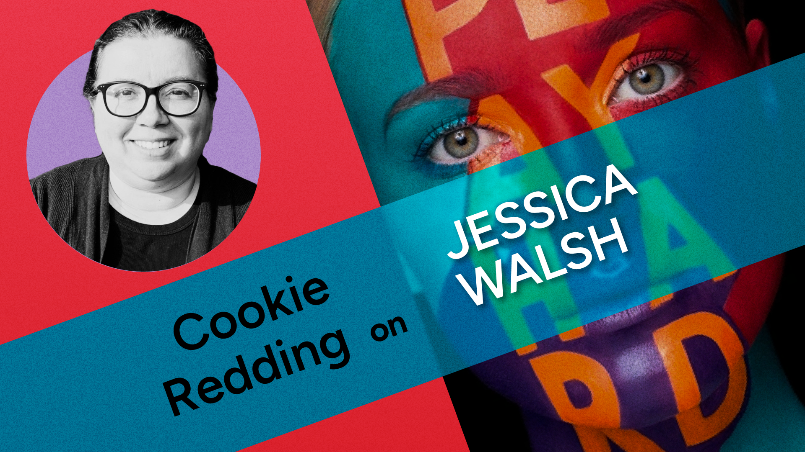
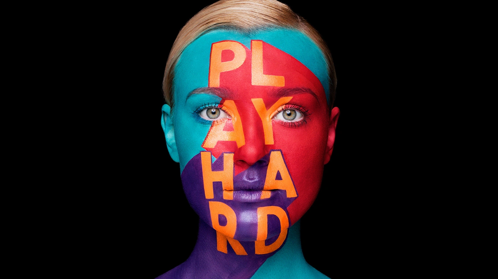

Jessica Walsh
For this week’s Case Study, I’m talking to a fellow professor at Penn State, who also teaches digital arts classes for World Campus, about one of their favorite designers and the Fundamental of Texture.

Benjamin Andrew: Can you introduce yourself and tell me a little about your relationship to art and design?
Cookie Redding: My name is Cookie Redding and I'm a lecturer here at PSU in the DMD program. I got my start in design in undergraduate studies and after graduating with my MFA, I began teaching design at Shippensburg University while also working in the design departments at three of my regional newspapers (back when they existed!). The blending of my real world design experiences plus teaching have always been a great asset to my process as I can help students find their way on their design path, with real world design connections. Connecting students with what they love to design is my favorite thing to do in teaching. From there, I started my own design business, continued teaching and am now a part of the DMD program with PSU. I work predominately with print and web design — from book design, game design and branding.
**BA:** Wow, regional newspapers! And then, if I'm not mistaken, you also make paintings. When doing that alongside your design work, is it a matter of switching hats and having fun with a paintbrush on the weekends? Or do you see your work in those areas as more related?
CR: As far as art, I run my studio and art business (prints, exhibitions etc). I predominately paint, but also do printmaking (I have a litho press here at my home studio but just sold all my letterpresses!), drawing and ceramics. I was always told to "choose one" medium from my former professors, but always managed to ignore that advice because, for me, my art doesn't work within the boundaries of one medium. I weave in and out of the art studio throughout the day and always have a series going.
My current body of work focuses on making paint from the ashes from old paintings that I have burned and as well finding natural materials to make into pigments. Some of my design side can be seen in some of my paintings, too, as I like to collage/layer/use type within the pieces. I view them all as related because I'm dealing with the same questions when I design or when I create fine art pieces.
**BA:** It does seem like typography is usually seen as residing in the design camp; words are supposed to be clear-cut and purposeful, whereas art is ostensibly more open-to-interpretation. I remember a teacher I had once said that if you put text in a painting, people will look at that first and expect it to explain everything.
Your description of burning your own paintings reminds me of John Baldessari's Cremation Project, where he burned years of work to create a kind of memorial to painting, as he shifted more and more into conceptual art. At least that's one interpretation. And some of those paintings were just text, like his hilarious What is Painting (which survived the fire incident).
How do you choose which paintings to destroy? And do you ever want to set your design work on fire?
**CR:** Some of my text is done via collage and some I scratch thoughts into the canvas, then either layer to oblivion or sand down, cover and layer over again.
I started burning my work in high school, as I am a rather prolific maker. Part of it was a sort of exorcism of sorts (that work that I deemed "not enough" or "didn't quite get there") and then in grad school (where my major was ceramics with a printmaking focus) I learned about "smashing pots" and how other cultures give art objects a "death" which fascinated me. So from that I started to more deliberately decide what to burn, so they'd have their proper ending. Some of this commingled with social media (I have started to video my burnings) where audience blends with the process (if one never shows the work, does it exist? And if it's just a photo now on social media—is that the art or is the art gone, since I've burned it?). The majority of the pieces on my feed no longer exist, other than via a photo on the feed or by ashes in a new piece (I like creating new from the ashes of the old).
So the pieces that I chose to burn have either served their purpose or didn't quite get there. Do I ever feel like just burning a piece? Yes. And very infrequently there's one that I later wasn't sure about if I should have or not, but at the end of the day it had it's cycle, which is the ultimate goal.
**BA:** That idea of an exorcism is fascinating, and there's a lot of contemporary art built around temporary duration and ephemerality, but those are often installations or performances — paintings are supposed to last forever, or so we're told.
Thanks for that peek into your studio, which should provide some context for our discussion of Jessica Walsh, whose design studio &Walsh operates out of New York and does a range of work, including branding, ads, social initiatives, and much more. You highlighted their campaign for a Middle Eastern department store called Aizone. What's the significance of this work for you?

Jessica Walsh, Aizone campaign, 2011-14
CR: One thing in particular that I love with her work is the melding between analog and digital production means — something I like to explore in my own work and it's something I like students to think about because it can help tie their work together in a more unique, autographic style.
**BA:** Yes, watching the video about this campaign, I imagine they started with sketches or Photoshop mockups, then painstakingly translated the designs onto the models, then photographed them to return to the world of digital editing again as they made the final campaign materials. And the stencils glimpsed in the video are another example of carefully translating digital designs to physical surfaces.
There's also an interesting tension between the flat designs — with their geometric shapes and typography — and the three-dimensional form of the body, which of course gets flattened out again in the final image. What do you think you get from hand-painting these and rephotographing them, as opposed to simply photographing unadorned faces and adding the designs in Photoshop?

**CR:** One thing that I find interesting with the painting and photographing is how it harkens to the "old days" of design (more DIY style) while giving it a more contemporary feel. In drawing, I speak of translating the 3D onto a 2D surface to make it feel 3D again, and it has an essence of that as well.
**BA:** DIY is interesting to think about in the context of digital media, where high level production tools are easily available to anyone: HD cameras in our pockets, free or affordable production software for anything you can imagine... So is "DIY style" about using specific analog media? Or an embrace of imperfections?
I've recently become mildly obsessed with the playdough typography of designer Emma Bers, which gets at this idea. She's relatively new to graphic design, so there's that sense of figuring something out from zero, which feels integral to the best DIY projects, like everything Instructables where people are not necessarily trained in what they are doing. I'm not sure people still use Instructables, but it's been a big resource for me over the years.

**CR:** For me it's both — analog combined with digital as well the imperfections. The hand connecting with the eye.
Emma's work is great! Jessica Hische did some fun work with food which you may like too. This can be such a great time as a designer (which most don't realized) because you can get super creative, since you're still finding your own "rules"
I also love what Marmalade Bleue does with food and typography.

**BA:** Ah, I love anything involving food! But I have way more patience for tweaking vector paths than slicing cookie dough or the like (possibly it’s the presence of an undo button).
One thing I'd like students to think about with regard to this campaign by Walsh is texture as a formal design element. Like we just discussed, texture can be a part of a DIY aesthetic, but also grunge and punk... The edges haven't been sanded off and the grain reveals something about how a work was made and where it comes from. Texture can align with all sorts of cultural references or suggest different art-making processes; I read a lot of Eric Carle books with my kids, and recently learned he had a background in graphic design. Which I see in his use of flat shapes and minimal compositions, but then his use of texture adds so much — a kind of dynamic energy that brings the scenes to life.

Read about Eric Carle's tissue paper collage technique
This stuff can feel overly decorative if it's not intrinsic to the work. With digital tools, we can easily add a veneer of "sketchiness" or "grunge" to a design, or layer on textures and noise to create some depth. (Grunge typefaces usually make me cringe for this reason.) So what advice would you give to students when they're choosing textures or an overarching style for a work? How do you know if you should add paint-splatters, stained concrete, or just keep your colors flat?
**CR:** I think for students exploring texture, experimentation is key in order to find their voice. Also to keep in mind that their aesthetics will evolve over time. Once upon a time in my early days, I was quite a big fan of David Carson...which was a good starting point for me (the "grunge" era for sure, but I liked how he manipulated type as a visual texture---akin to some of Debbie Millman and Ellen Lupton's style with text as texture). It was a good way to explore (in this case) type as a textural element...I would even print it out, scuff it up, scan it and manipulate it further. All of those experiments ended up being the steps needed for me to find my current body of work (sans the ode to Carson).
I keep various sketchbooks where I do "analog" Pinterest (ie: cull through magazines, cut out what I like and glue into my sketchbook for reference later down the line). This is a great way to visually build a personal database. For those who are more digitally inclined, Pinterest boards on specific topics (like texture) could be made and saved for later viewing and pondering.
I also recommend a folder of some sort for collecting samples one finds interesting, like paper scraps etc — that could maybe be incorporated into later projects (maybe a piece of paper with a next visual texture that could later be scanned and added in some way to their project). This is a great way to add their own personal touch/style/voice to a piece — that makes it unique and "just theirs" (versus something found in a texture pack online that anyone can buy and use).
**BA:** Great advice. My most treasured assets in my "Resources" folder are a bunch of glitchy TV clips I found on YouTube. Thanks for sharing all of this with us!